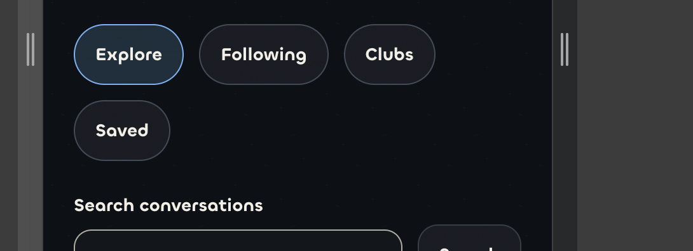
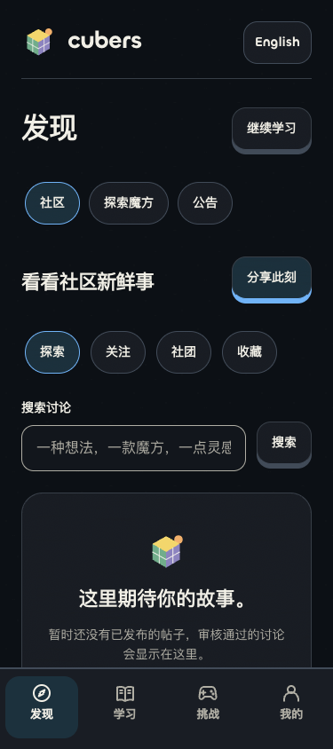
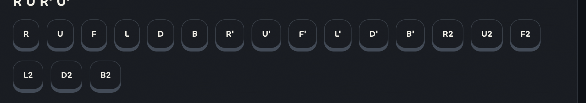
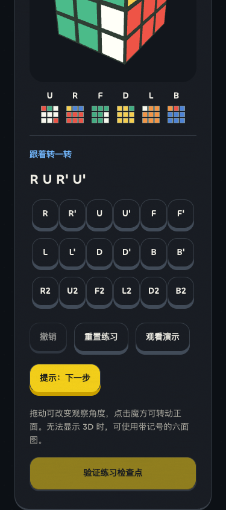
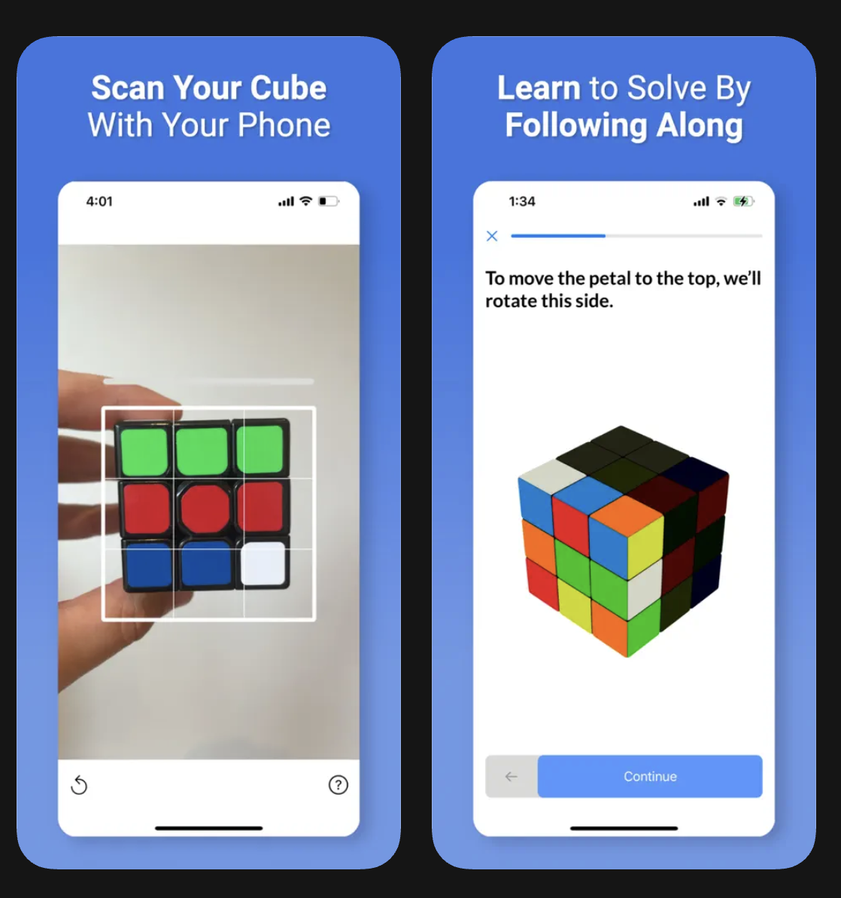
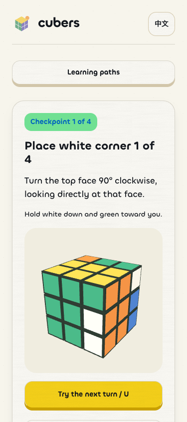
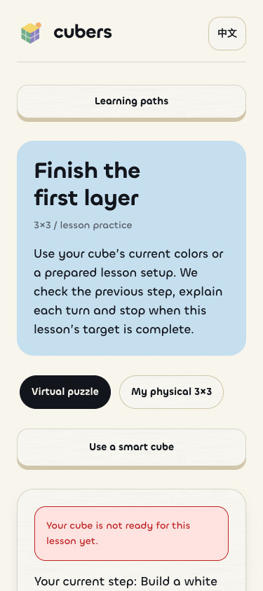

Cubers: scrolling pills and state-based lessons
Original Hum styling and game accents are preserved. Current captures use isolated synthetic learning data.
Pill-shaped choices
User-supplied before capture
Current Cubers interface
Six controls per move row
User-supplied before capture
Current Cubers interface
Next-turn teaching
User-supplied reference layout
Current Cubers interface
Prerequisite check
A corners lesson refuses a cube that still needs a cross and offers the matching lesson.

Implementation and verification details